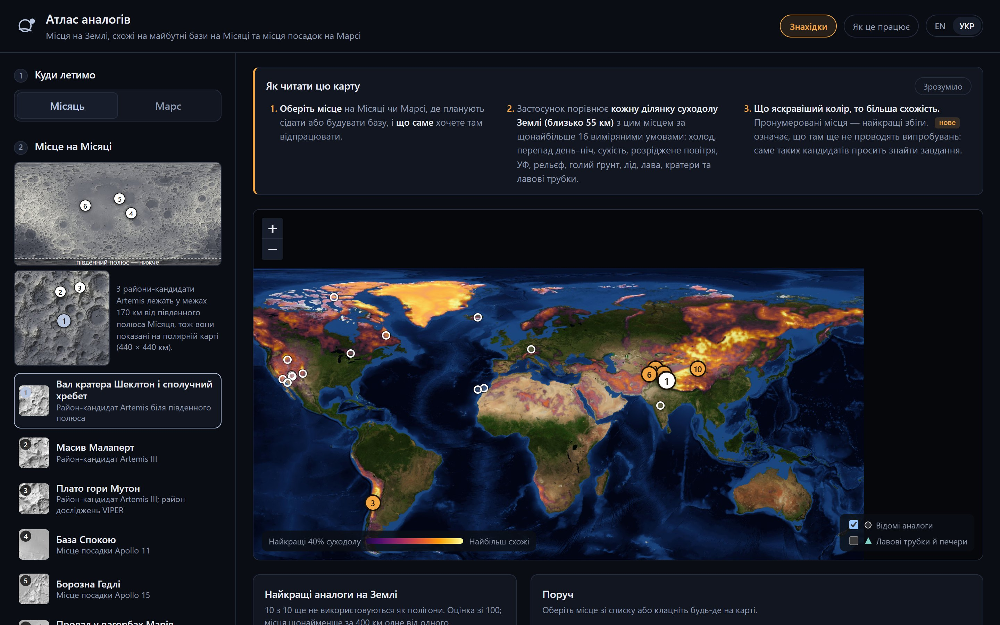
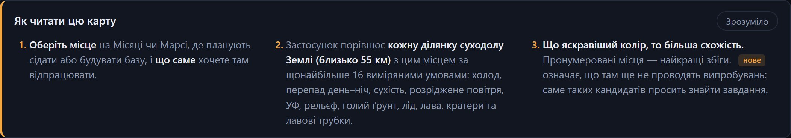
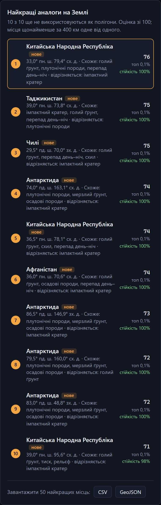
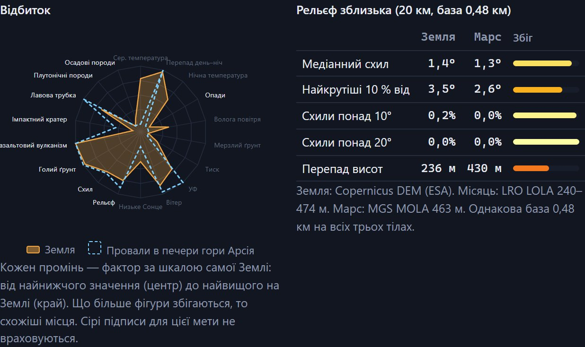
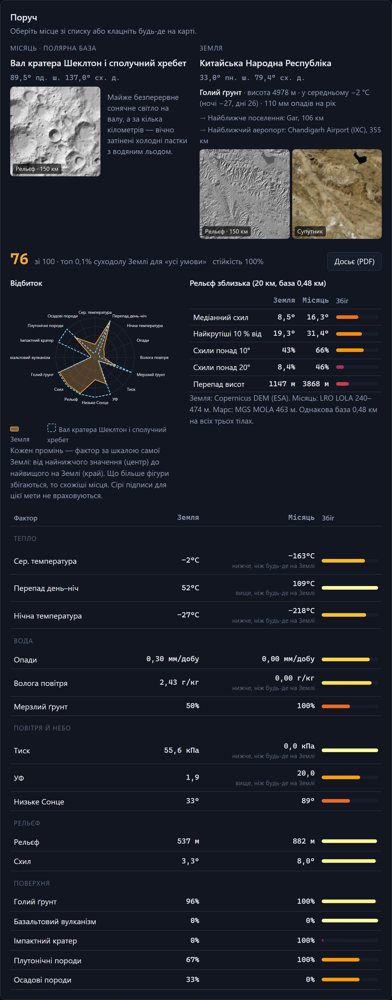

Пошук місць на Землі, схожих на майбутні бази на Місяці та місця посадок на Марсі, за відкритими даними NASA. Документація: що показує застосунок, як він працює, як ми перевіряємо результат і чому отримуємо саме такі відповіді.

Автор: А. Широков (ARKONEN)
Версія: жовтень 2026
Завдання: Identify Earth Locations that Analog the Permanent Moon Base Locations and Mars
Код: github.com/ARKONEN1/NASA
Зміст
1Коротко
2Навіщо це потрібно
3Що де на екрані
4Як користуватися: крок за кроком
5Як це працює: метод
6Як ми перевіряємо, що метод працює
7Як ми аналізуємо результати і чому вони саме такі
8Обмеження
9Як відтворити результати
10Джерела даних
11Що додано після жовтня
1. Коротко
Перш ніж відправити ровер, бур чи екіпаж на Місяць або Марс, NASA відпрацьовує техніку й методи на Землі, у так званих земних аналогах: у пустелі Атакама, на острові Девон, у Долині Смерті. Таких місць відомо небагато, і їх обирали здебільшого з досвіду експертів. Завдання хакатону — знайти й описати нові аналоги за відкритими даними.
Ми зробили вебзастосунок «Атлас аналогів». Користувач обирає місце на Місяці чи Марсі (наприклад, район бази Artemis біля південного полюса Місяця) і те, що він хоче там відпрацювати. Застосунок порівнює з цим місцем кожну ділянку суходолу Землі (близько 71 тисячі ділянок по ~55 км) за 16 виміряними умовами. Результат — карта схожості, десятка найкращих місць з поясненням «чим схоже і чим ні», детальне порівняння за кожним фактором, рельєф зблизька за даними ESA Copernicus, логістика і друковане досьє на кожного кандидата.
71 070ділянок суходолу Землі, кожна описана 16 факторами з відкритих даних
15цільових місць: 6 на Місяці та 9 на Марсі
64–98 %медіанний ранг відомих полігонів NASA/ESA, яких модель не бачила (випадкове місце — 50 %)
93 %місць із 90 списків «топ-10» лишаються в найкращому 1 % суходолу при випадковій зміні ваг на ±50 %
1 525кандидатів із детальним рельєфом ESA Copernicus DEM на базі 0,48 км
5знахідок у вбудованій екскурсії, серед них нові кандидати Харрат-Хайбар і Земля Пірі
Головна перевірка чесна й «сліпа»: 19 полігонів, які вже використовують NASA та ESA, ми моделі не показували. Якщо метод має сенс, вони мають самі опинитися нагорі. Так і відбувається: наприклад, для кратера Єзеро на Марсі модель сама ставить на перше місце пустелю Атакама. А там, де відомі полігони не підтверджують метод, ми це показуємо й пояснюємо (розділ 6).
2. Навіщо це потрібно
Що таке земний аналог
Земний аналог — це місце на Землі, де умови в чомусь схожі на умови іншого небесного тіла. Там можна перевірити обладнання, маршрути роверів, буріння, житлові модулі й роботу людей до того, як це коштуватиме мільярди доларів у космосі. Приклади: астронавти Apollo вчилися геології в Метеоритному кратері в Аризоні та на вулканах Ісландії; марсіанські ровери тестують в Атакамі; проєкт Haughton-Mars працює в арктичному кратері Хоутон.
Чого просить завдання
У тексті завдання два ключові дієслова: identify (знайти) і characterize (описати). Обирати майданчики для посадки й баз допомагають рельєф, геологія, умови середовища та ресурси. Тож аналог треба шукати не лише «за картинкою рельєфу», а за всією сукупністю умов: холод, перепади температур, сухість, розріджене повітря, ультрафіолет, голий ґрунт без рослин, лід, вулканічні породи, ударні кратери, печери. Важливе й слово new: Атакаму чи Долину Смерті вже знають, цінність — у місцях, які ще не використовуються. І ще одна вимога: дані NASA та інших космічних агентств. Крім даних NASA ми використовуємо цифрову модель рельєфу Copernicus DEM Європейського космічного агентства (ESA).
Чому не можна просто «знайти другий Місяць»
Жодне місце на Землі не схоже на Місяць чи Марс буквально. На Землі немає ночей при −180 °C, тиску 0,7 кПа чи повної відсутності опадів. Гравітацію, вакуум і космічну радіацію на Землі не відтворити взагалі. Тому кожен аналог частковий: місце може бути чудовим для тесту ровера (схожий рельєф і ґрунт) і поганим для тесту житла (м'який клімат). Через це в застосунку є вибір мети: що саме ми відпрацьовуємо.
Що дає застосунок команді місії:
карту всієї суші Землі, розфарбовану за схожістю з обраним місцем;
список найкращих кандидатів із позначкою «нове» або «відоме»;
опис кожного кандидата: покрив, висота, клімат, найближчі вулкан, кратер і лавова трубка;
порівняння фактор за фактором: що збігається, що ні і де умови цілі взагалі виходять за межі земних;
перевірку стійкості кожного кандидата до вибору ваг;
рельєф зблизька на однаковій базі 0,48 км на Землі, Місяці й Марсі;
логістику: найближче поселення й аеропорт;
досьє полігона — одна друкована сторінка на кожного кандидата;
вивантаження 50 найкращих місць у CSV або GeoJSON для подальшої роботи в ГІС.
3. Що де на екрані
Рис. 1. Головний екран (українська версія). Ціль — вал кратера Шеклтон біля південного полюса Місяця, мета — «Усі умови».
Зона
Що там
Шапка
Назва, кнопка «Знахідки» (екскурсія по головних результатах), кнопка «Як це працює» (опис методу й підказка) та перемикач мови EN / УКР.
Ліва панель, крок 1
Куди летимо: Місяць або Марс.
Ліва панель, крок 2
Місце: рельєфна карта Місяця чи Марса з пронумерованими цілями та список цих цілей з мініатюрами.
Ліва панель, крок 3
Що будемо випробовувати: шість цілей використання; під ними можна вручну налаштувати ваги факторів.
Блок «Як читати цю карту»
Три речення про те, як користуватися застосунком. Кнопка «Зрозуміло» ховає блок.
Карта Землі
Схожість кожної ділянки суходолу з обраною ціллю; пронумеровані найкращі місця; білі кружки — відомі аналоги; трикутники — лавові трубки (вмикаються окремо).
«Найкращі аналоги на Землі»
Десять найкращих місць щонайменше за 400 км одне від одного, з оцінкою, позначкою «нове/відоме» та коротким поясненням. Під списком — вивантаження CSV/GeoJSON.
«Поруч»
Ціль і обране земне місце поруч: опис, логістика, рельєф, супутниковий знімок, оцінка зі стійкістю, кнопка «Досьє (PDF)», «відбиток» факторів, рельєф зблизька і таблиця всіх факторів.
«Чи працює метод?»
Де опиняються відомі полігони NASA/ESA при поточному виборі і які фактори вони підтверджують.
«Як це працює»
Короткий опис методу, обмежень і список джерел даних.

Рис. 2. Підказка для першого відвідування: три кроки замість інструкції.
4. Як користуватися: крок за кроком
4.1. Мова
Перемикач EN / УКР у правому верхньому куті змінює весь інтерфейс, назви місць на Місяці й Марсі, назви відомих полігонів і країн. Вибір запам'ятовується в браузері.
Рис. 3. Шапка: кнопки «Знахідки» і «Як це працює» та перемикач мови.
4.2. Кроки 1–2: обрати місце на Місяці чи Марсі
Карти побудовані з тих самих даних, що й розрахунок: Місяць — з лазерного альтиметра LRO LOLA, Марс — з MGS MOLA. Номер маркера на карті збігається з номером у списку; клік по маркеру або рядку списку обирає ціль, і карта Землі одразу перераховується.
Три райони-кандидати Artemis лежать у межах 170 км від південного полюса Місяця. На звичайній карті вони злилися б у смужку біля нижнього краю, тому показані окремо на полярній карті 440 × 440 км (стереографічна проєкція з полярної цифрової моделі рельєфу LOLA 240 м). На глобальній карті смуга полюса позначена пунктиром.
Рис. 4. Місяць: глобальна карта (місця 4–6) і полярна врізка з районами Artemis (1–3).Рис. 5. Марс: дев'ять цілей — від кратерів Єзеро й Гейла до крижаних рівнин і печер гори Арсія.
4.3. Крок 3: що будемо випробовувати
Мета визначає, які фактори важливіші. Ровери потрібно випробовувати на схожому рельєфі, а житловий модуль — у схожому холоді й сухому розрідженому повітрі. Під кнопками коротко написано, на що зважає кожна мета. У розділі «Налаштувати ваги факторів» кожен фактор можна посилити або вимкнути вручну (від 0 до 3). Фактори, які для цілі не мають сенсу, позначені «н/з» (наприклад, вітер на Місяці, де немає атмосфери).
Рис. 6. Шість цілей використання.Рис. 7. Ручне налаштування ваг.
4.4. Карта Землі
Колір показує, наскільки ділянка схожа на ціль. Розфарбовано лише найкращі 40 % суходолу: від темно-фіолетового до світло-жовтого (найбільш схожі). Пронумеровані помаранчеві кружки — десять найкращих місць. Білі кружки — відомі полігони NASA/ESA, щоб одразу було видно, де вони стоять відносно знайденого. Перемикач унизу праворуч додає шар лавових трубок і печер. Карту можна наближати, а клік по будь-якій ділянці відкриває її порівняння з ціллю.
Рис. 8. Схожість суходолу Землі з валом кратера Шеклтон (мета «Усі умови»). Найяскравіші — високогір'я Центральної Азії, пуна Анд, полярні пустелі.
4.5. Список найкращих аналогів

Рис. 9. Десятка найкращих для валу Шеклтона.
Кожен рядок містить країну, координати, оцінку зі 100 і частку суходолу, яку місце випереджає («топ 0,1 %» означає, що схожіших місць на Землі менше ніж 0,1 % площі суші). Позначка нове означає, що в радіусі 150 км немає відомого полігона; відоме — що є. Пояснення «Схоже: …» називає фактори, за якими місце найсильніше випереджає звичайну ділянку суші, а «відрізняється: …» — найгірший збіг.
4.6. Порівняння «Поруч»
Ліворуч — ціль: тип місця, координати, відмивка рельєфу 150 × 150 км і чому це місце важливе. Праворуч — земне місце: країна, координати, опис одним рядком (тип поверхні, висота, середня, нічна й денна температура, опади за рік), найближчі вулкан, імпактний кратер і лавова трубка з назвами та відстанню, відмивка рельєфу того самого масштабу (ASTER GDEM) і супутниковий знімок (Blue Marble).
Нижче — таблиця всіх факторів: значення на Землі, значення цілі та смужка збігу. Підпис «нижче / вище, ніж будь-де на Землі» означає, що умова цілі виходить за межі земного діапазону. Тоді найкращий можливий збіг — найекстремальніше місце Землі (див. 5.3). Сірі рядки — фактори, які для обраної мети не враховуються.
Рис. 10. Кратер Єзеро (Марс) поруч із найкращим земним аналогом — пустелею Атакама в Чилі.
4.7. Вивантаження результатів
Кнопки CSV і GeoJSON під списком зберігають 50 найкращих місць (щонайменше за 250 км одне від одного) для поточного вибору. Для кожного місця записано ранг, координати, країну, оцінку, частку суходолу, статус «нове/відоме», тип покриву, висоту, а також значення кожного фактора та його збіг з ціллю. GeoJSON відкривається в QGIS, ArcGIS або Google Earth. У файлі є також стійкість, найближчі поселення й аеропорт і показники рельєфу зблизька.
4.8. Відбиток і рельєф зблизька
Відбиток — радарна діаграма всіх факторів. Кожен промінь — фактор за шкалою самої Землі: у центрі найнижче значення на Землі, на краю — найвище. Пунктирна фігура — ціль на Місяці чи Марсі, заповнена — земне місце. Що більше фігури збігаються, то схожіші місця; сірі підписи для обраної мети не враховуються. Відбиток дає зрозуміти схожість за секунду, без читання таблиці.
Рельєф зблизька порівнює місця на масштабі посадкового еліпса: вікно 20 × 20 км з кроком 0,48 км. Показано медіанний схил, поріг найкрутіших 10 % схилів, частку схилів понад 10° і 20° та перепад висот. Для Землі це дані ESA Copernicus DEM, для Місяця — LRO LOLA (240–474 м), для Марса — MGS MOLA (463 м).

Рис. 11. Відбиток і рельєф зблизька: печери гори Арсія (Марс) і Харрат-Хайбар (Саудівська Аравія).
4.9. Стійкість і логістика
Під оцінкою кожного місця стоїть стійкість: у скількох із 60 перерахунків з випадково зміненими вагами місце лишається в найкращому 1 % суходолу (див. 6.5). Зелений колір — стійкість від 80 %, помаранчевий — нижче. У картці місця є логістика: найближче поселення й аеропорт з відстанню (Natural Earth). Для польової експедиції це перше практичне питання.
4.10. Досьє полігона
Кнопка «Досьє (PDF)» у блоці «Поруч» відкриває друк однієї сторінки на кандидата: оцінка, стійкість, статус, опис і логістика, три зображення (ціль, рельєф і знімок Землі), відбиток, придатність для кожної з шести цілей, рельєф зблизька і таблиця всіх факторів. У діалозі друку оберіть «Зберегти як PDF». Таке досьє можна одразу передати команді експедиції.
Рис. 12. Досьє Харрат-Хайбару як земного аналога печер гори Арсія.
4.11. Знахідки й посилання
Кнопка «Знахідки» запускає екскурсію з п'яти кроків по головних результатах (розділ 7). Кожен крок сам перемикає ціль і мету, відкриває потрібне місце на карті й пояснює, що ми знайшли. Цей режим зручний для показу журі.
Адреса сторінки завжди містить поточний вибір, наприклад #/mars/arsia/geology/25.5,40. Таким посиланням можна поділитися: воно відкриє той самий вибір і те саме місце.
Рис. 13. Екскурсія «Знахідки», крок 2: новий кандидат Харрат-Хайбар.
5. Як це працює: метод
5.1. Дані
Усі дані відкриті. Для Землі ми зібрали глобальну сітку NASA POWER (0,5° × 0,625°, близько 55 км) і залишили лише ділянки, де щонайменше чверть площі — суходіл. Вийшла 71 070 ділянка. Для кожної виміряно 16 факторів:
Фактор
Земля (кожна ділянка)
Місяць / Марс (кожна ціль)
Рельєф, схил
NOAA ETOPO1, крок 3,7 км
LRO LOLA (біля полюса — 240 м), MGS MOLA 128 точок/° (~460 м)
Рельєф зблизька (інформаційно)
ESA Copernicus DEM (рівень 240 м), база 0,48 км
LRO LOLA 240 м / LDEM_64 474 м; MGS MOLA 463 м
Логістика (інформаційно)
Natural Earth: 7 342 поселення, 893 аеропорти
—
Температура ґрунту: середня, перепад день–ніч, нічна
Значення з публікацій: опадів немає, водяної пари майже немає, тиск 0–0,9 кПа
Голий ґрунт, лід
MODIS IGBP Land Cover 2024 через NASA GIBS
Поверхня завжди гола
Мерзлий ґрунт
Частка місяців нижче 0 °C або частка льоду
0–1 за відомим ґрунтовим льодом
Базальтовий вулканізм
Відстань до голоценових базальтових вулканів (Smithsonian GVP)
0–1 за геологією місця
Імпактний кратер
Відстань до відкритих підтверджених кратерів (Earth Impact Database)
0–1 за геологією місця
Низьке Сонце
Широта
Широта
Лавова трубка
Відстань до 22 добре задокументованих лавових трубок
Лише для печерних цілей
5.2. Однакові виміри рельєфу на трьох світах
Рельєф порівнювати чесно можна лише тоді, коли він виміряний однаково. Тому для кожного місця на кожному небесному тілі ми беремо висоти на однаковій сітці 15 × 15 точок з кроком 3,7 км, тобто в квадраті 52 × 52 км, у локальній проєкції навколо центру. З цих висот рахуємо дві величини: перепад висот (стандартне відхилення висоти, м) і типовий схил (медіанний ухил на базі 3,7 км, градуси). Перевірка стійкості: коли ми перейшли для Марса з грубої моделі MOLA 16 точок/° на детальну 128 точок/°, величини майже не змінилися (кратер Гейла: 1245 м → 1283 м). Отже, міра не залежить від випадкових деталей даних.
5.3. Шкала самої Землі
Головна ідея методу. Порівнювати абсолютні значення безглуздо: для тиску 0,7 кПа на Марсі будь-яке місце Землі (50–105 кПа) «однаково погане». Тому кожен фактор ми переводимо в перцентиль серед суходолу Землі з урахуванням площі ділянки: 0 — найнижче значення на Землі, 1 — найвище. Значення цілі переводиться в ту саму шкалу. Якщо воно виходить за межі земного діапазону, воно стає 0 або 1, тобто вказує на найекстремальніший край Землі.
Приклад. Тиск у кратері Єзеро — 0,7 кПа, нижче, ніж будь-де на Землі, тож ціль отримує перцентиль 0. Найближчі до неї земні місця — ті, де тиск найнижчий серед суходолу, тобто найвищі нагір'я. У пустелі Атакама на висоті 2959 м тиск 71,9 кПа: це не марсіанський тиск, але це вже нижні кілька відсотків земного розподілу. Тому збіг за тиском там високий.
5.4. Оцінка
Для кожного фактора f схожість земної ділянки з ціллю дорівнює одиниці мінус різниця перцентилів. Для факторів-ступенів (голий ґрунт, мерзлий ґрунт, вулканізм, кратер, лавова трубка), які вже лежать на шкалі від 0 до 1, різниця береться напряму:
sf = 1 − | PЗемля(f) − Pціль(f) |
Підсумкова оцінка — зважене середнє за всіма факторами з вагами wf обраної мети, помножене на 100:
S = 100 · Σ wf · sf / Σ wf
Окремо ми рахуємо, яку частку площі суходолу Землі місце випереджає за цією оцінкою (це й є «топ 0,1 %»). Найкращі місця відбираються жадібно, щонайменше за 400 км одне від одного, щоб одне нагір'я не заповнило всю десятку.
Низьке Сонце 3, рельєф 1,5; середня й нічна температура, голий ґрунт 1
Довгі тіні й низьке Сонце, як на полюсах Місяця
5.6. Як формуються пояснення «Схоже» і «відрізняється»
Якби ми просто називали фактори з найвищим збігом, пояснення були б порожніми. Наприклад, «немає вулкана поруч» правдиве для більшої частини Землі. Тому для кожного фактора ми рахуємо середній збіг звичайної ділянки суші і називаємо ті фактори, де місце випереджає це середнє найбільше (з урахуванням ваги). Так «Схоже: імпактний кратер, голий ґрунт, перепад день–ніч» означає саме те, що робить місце особливим. «Відрізняється» — фактор з найгіршим збігом, якщо він нижчий за 60 %.
5.7. Рельєф зблизька: як рахується
Глобальна сітка грубувата (~55 км), а для посадки й маршрутів роверів важливі схили на масштабі сотень метрів. Тому для кожного кандидата ми рахуємо окремий набір показників у вікні 20 × 20 км з кроком 0,48 км. Це найдрібніший масштаб, доступний на всіх трьох тілах: ESA Copernicus DEM на Землі (рівень 240 м), LOLA 240 м біля полюса Місяця та LDEM_64 (474 м) на інших широтах, MOLA 463 м на Марсі.
Copernicus DEM не дозволяє читати дані прямо з браузера, тому показники пораховано заздалегідь для 1 525 кандидатів. Це всі місця, що потрапляють у будь-який список топ-50 для будь-якої цілі й мети, плюс відомі полігони. Ці показники не входять в оцінку: вони допомагають обрати конкретну ділянку всередині знайденого району.
6. Як ми перевіряємо, що метод працює
6.1. Сліпа перевірка на відомих полігонах
Ми склали список 19 місць, які NASA та ESA вже використовують як аналоги: пустеля Атакама, Сухі долини Мак-Мердо, кратер Хоутон на острові Девон, Марсіанська пустельна станція в Юті, Долина Смерті, Ріо-Тінто, Цайдамська западина, Пілбара, Даллол, Шпіцберген, Мауна-Кеа, лавовий потік Блек-Пойнт, Метеоритний кратер, Кратери Місяця в Айдахо, Садбері, кратер Ріс, Лансароте, високогір'я Ісландії, озеро Містастін. Ці місця не використовуються в розрахунку оцінки. Вони потрібні лише для того, щоб подивитися, куди їх поставить модель.
Для кожного полігона береться найкраща ділянка в радіусі 60 км, і ми дивимося її ранг серед усього суходолу. Випадкове місце мало б у середньому ранг 50 %. Якщо медіана відомих полігонів помітно вища, оцінка справді вловлює те, за чим люди обирали аналоги.
Рис. 14. Блок «Чи працює метод?» для кратера Єзеро: медіанний ранг 14 марсіанських полігонів — топ 22 % (тобто 78-й перцентиль); 6 із 14 потрапили в найкращі 10 % суходолу.
6.2. Результати по всіх цілях
Медіанний ранг відомих полігонів (перцентиль суходолу; 50 % = випадкове місце), усереднено за всіма цілями відповідного тіла:
Мета
Місяць (11 полігонів)
Марс (14 полігонів)
Усі умови
79,9 %
80,8 %
Ровери й виходи
89,8 %
89,2 %
Житло й довгі місії
64,3 %
78,4 %
Лід і ресурси
77,9 %
86,1 %
Геологія й зразки
98,2 %*
90,0 %*
Світло й енергія
76,0 %
77,7 %
* Перевірка для «Геології» частково замкнена сама на себе: деякі полігони (Метеоритний кратер, Садбері, Ріс, Кратер Хоутон) відомі саме тими кратерами й вулканами, які є в каталогах, що використовує модель. Ми не вважаємо ці цифри доказом і наводимо їх лише для повноти.
Усі значення вищі за 50 %, у більшості сценаріїв — 77–90 %. Найслабший випадок — «Житло» для Місяця (64 %). Ми розібралися, чому так.
6.3. Діагностика: що саме підтверджують відомі полігони
Під результатами перевірки застосунок показує два списки: за якими факторами відомі полігони вирізняються зі звичайної суші, а за якими не кращі за неї. Для мети «Житло» на Місяці картина така: полігони виділяються голим ґрунтом, температурами, сухістю повітря й тиском, але не кращі за звичайну сушу саме за найбільш «місячними» ознаками — величезним перепадом день–ніч, відсутністю опадів і сильним УФ. До того ж частина полігонів лежить у м'якому кліматі: Лансароте (топ 84 %), Мауна-Кеа (67 %), кратер Ріс (59 %).
Висновок. Відомі місячні полігони (Гаваї, Аризона, Ріс, Садбері, Ісландія) обирали заради геології й рельєфу, а не клімату. Тому вони не можуть ні підтвердити, ні спростувати кліматичну частину методу для Місяця: еталона «місячного клімату» серед них немає. Для марсіанських цілей та сама мета дає 78,4 %, бо марсіанські полігони (Атакама, Сухі долини, Девон) якраз обирали за холодом і сухістю. Це не помилка оцінки, а межа того, що можна перевірити. Застосунок прямо пише про це під списками.
6.4. Виправлення, яке дала перевірка
Аналіз перевірки виявив одну справжню помилку. У меті «Лід і ресурси» для рівнини Аркадія (Марс) спочатку перемагав льодовиковий щит Антарктиди, а застосунок сам писав «відрізняється: голий ґрунт». Але на Марсі лід лежить під голим реголітом, на глибині до метра-двох. Фізично найближчий аналог — вічна мерзлота полярних пустель, а не льодовик. Ми підняли вагу голого ґрунту в цій меті з 1 до 3 і перевірили результат:
Вага «голий ґрунт» у меті «Лід»
1 (було)
3 (стало)
Кратер Хоутон, о. Девон (відомий полігон)
топ 7,0 %
топ <0,1 %
Сухі долини Мак-Мердо (відомий полігон)
топ 6,7 %
топ 5,6 %
Перше місце
Льодовиковий щит Антарктиди
Земля Пірі, північ Гренландії
Медіана відомих полігонів, Марс / Місяць
78,6 % / 73,7 %
86,1 % / 77,9 %
Це виправлення фізичної помилки, а не підгонка під відповідь: ми змінили одну вагу з поясненням, і покращення видно на незалежних полігонах.
6.5. Стійкість: чи не залежить результат від наших ваг
Ваги факторів обирає людина, тож природне питання журі: «а що, як ваги трохи інші?». Ми відповідаємо на нього чисельно. Для кожного кандидата застосунок 60 разів перераховує всю карту. Кожного разу кожна вага множиться на випадкове число від 0,5 до 1,5, а положення цілі за шкалою Землі зсувається на ±0,05: це невизначеність округлених кліматичних значень Місяця й Марса. Стійкість — частка перерахунків, у яких місце лишається в найкращому 1 % суходолу. Генератор випадкових чисел фіксований, тому результат відтворюваний.
Показник (усі 15 цілей × 6 цілей використання = 90 списків, 900 місць)
Значення
Місця зі стійкістю ≥ 90 %
93,4 %
Місця зі стійкістю 100 %
75,6 %
Перше місце списку зі стійкістю ≥ 90 %
89 з 90
Найслабші мети (частка місць ≥ 90 %)
«Світло» 84 %, «Лід» 87 %
Отже, результати визначаються даними, а не точним вибором ваг. Менша стійкість у меті «Світло» та «Лід» закономірна: полярні пустелі дуже схожі між собою, і їхній порядок у списку легко змінюється. Але самі райони лишаються тими самими.
7. Як ми аналізуємо результати і чому вони саме такі
Кожен результат ми читаємо в три кроки. (1) Чи потрапили відомі полігони нагору? (2) Які фактори дають схожість — чи має це фізичний сенс? (3) Що в найкращого місця не збігається? Нижче — п'ять розборів.
Перше місце — Атакама (24,0° пд. ш., 68,8° зх. д., оцінка 85, позначка «відоме»). Модель не знала, що Атакама — класичний марсіанський полігон, і знайшла її сама. Чому:
голий ґрунт 100 %, як на Марсі;
опади 0,07 мм/добу (~30 мм на рік) — серед найсухіших місць Землі;
висота ~3000 м: тиск 71,9 кПа, сильний УФ, перепад день–ніч 45 °C;
рельєф 357 м проти 287 м у Єзеро, базальтовий вулканізм поруч, як на дні кратера.
Не збігається: імпактний кратер (найближчий — крихітний Монтуракі, 50 км) і, звісно, абсолютний холод.
Далі йдуть Памір, Альтиплано, Ахаггар в Алжирі (базальтове плато в Сахарі), Тібесті в Чаді. Це нові кандидати.
7.2. Печери гори Арсія (Марс), «Геологія й зразки» → Харрат-Хайбар, Саудівська Аравія
Рис. 17. Найкращі аналоги печер Арсії для геології.
Перше місце з великим відривом (86 проти 73 у другого) — Харрат-Хайбар (25,5° пн. ш., 40,0° сх. д.), позначка нове. Чому:
величезне базальтове лавове поле — ділянка стоїть просто на вулкані Хайбар;
лавова трубка Умм-Джирсан за 22 км — найдовша відома лавова трубка Аравійського півострова;
голий ґрунт, 30 мм опадів на рік, висота 1347 м.
Ціль на Марсі — провали в лавові трубки на схилах щитового вулкана. Хайбар — це той самий тип: базальтова лава й трубки, але сухо й без рослин. Як аналог NASA його не використовує. Саме такий результат ми вважаємо найціннішим: він новий, фізично обґрунтований і перевірюваний.
Логістика зручна: аеропорт Медини за 111 км. Стійкість — 100 %. Далі йдуть Даллол (Ефіопія) та Ісландія — обидва вже відомі полігони, що підтверджує логіку відбору.
Рис. 18. Карта для печер Арсії з увімкненим шаром лавових трубок (бірюзові трикутники). Яскраві смуги — вулканічні пояси Аравії, Східної Африки, Анд та Ісландії.
Перше місце — 39,0° пн. ш., 73,8° сх. д. (оцінка 85). Це район кратера Каракуль на Памірі: ударна структура завширшки 52 км на висоті 4512 м. Модель не знала про кратер напряму; вона побачила поєднання факторів:
імпактний кратер (вал Шеклтона — теж край ударного кратера);
голий ґрунт, мороз (у середньому −5 °C, ночі −30 °C) і великий перепад день–ніч;
низький тиск високогір'я.
Рельєф зблизька підтверджує збіг і на масштабі 0,48 км: медіанний схил 16,4° на Памірі проти 16,3° на валу Шеклтона, схилів понад 10° — 76 % проти 66 %. Це місце вартує уваги як полігон для тестів посадки й пересування на крутих схилах.
Не збігається: ультрафіолет (на Місяці він не має атмосферного захисту, на Памірі — має) і, звісно, полярне світло. Решта десятки — нагір'я Тибету, Каракорум і пуна Анд. Це закономірно: на Землі «найбільш місячні» умови — розріджене повітря, сухість, мороз і голий ґрунт — збираються саме у високогірних пустелях. Для мети «Світло й енергія» вагу отримує широта, і результат зсувається в полярні регіони: перші місця займають північ Гренландії, острів Елсмір і Шпіцберген.

Рис. 19. Вал Шеклтона поруч із Памірським місцем.Рис. 20. Борозна Гедлі, мета «Ровери»: найкращий збіг (96) — пуна Атакама біля вулкана Тілокалар.
7.4. Борозна Гедлі (Місяць), «Ровери й виходи» → пуна Атакама
Для роверів важать рельєф, схили й голий ґрунт. Перше місце — 24,0° пд. ш., 68,1° зх. д. (оцінка 96), на висоті 3436 м, за 3 км від базальтового вулкана Тілокалар: лавові потоки, схили й голий ґрунт, як біля лавового каналу Гедлі в підніжжі місячних Апеннін. У цьому сценарії відомі місячні полігони мають медіанний ранг топ 7 %, і 6 з 11 — у найкращих 10 %.
Після виправлення з розділу 6.4 перші місця займають Земля Пірі на півночі Гренландії (82,0° пн. ш.) та острови Канадського Арктичного архіпелагу. Кратер Хоутон на острові Девон, відомий марсіанський полігон, — шостий. Схожість дають голий ґрунт, мерзлий ґрунт і середня температура. Це полярні пустелі: вічна мерзлота під кам'янистим ґрунтом без рослин, майже як марсіанський лід під реголітом.
Не збігається: подекуди рельєф (Аркадія — одна з найрівніших поверхонь Марса), а опадів тут більше, ніж у Сухих долинах.
Рис. 21. Аркадія, мета «Лід»: найяскравіші — Арктика, Тибет і Антарктида. Пронумеровані найкращі місця — переважно полярні пустелі Гренландії й Канадського архіпелагу; № 6 — кратер Хоутон на острові Девон, відомий полігон.
7.6. Загальна закономірність
Земні аналоги Місяця й Марса зосереджені в кількох типах місць, і кожен відповідає певній групі умов:
високогірні пустелі (Альтиплано й пуна Анд, Тибет, Памір): розріджене повітря, мороз, сухість, великий перепад день–ніч;
Те, що три класичні типи земних аналогів (Атакама, Сухі долини, вулканічні поля) з'являються самі, без підказок, — ще одне підтвердження, що метод вловлює фізику, а не випадковість.
8. Обмеження
Аналог завжди частковий. Гравітацію, вакуум і космічну радіацію на Землі не відтворити. Тому застосунок відповідає на питання «для чого саме схоже», а не «де другий Марс».
Роздільність ~55 км. Окремі печери, вали кратерів чи пагорби менші за ділянку не видно. Застосунок знаходить райони, а точне місце для полігона потрібно обирати детальнішими даними.
Клімат Місяця й Марса — округлені значення з публікацій (Diviner, REMS, MEDA, Phoenix, InSight, Mars Climate Database), а не власні вимірювання.
Лавові трубки — список, складений вручну (22 добре задокументовані системи). Глобального каталогу немає, тож список неповний, а координати приблизні.
Перевірка «Геології» частково замкнена сама на себе (розділ 6.2), а кліматичну частину для Місяця перевірити нема на чому (розділ 6.3).
Рельєф зблизька пораховано заздалегідь лише для 1 525 кандидатів; якщо користувач сильно змінить ваги, нове місце може не мати цих даних. Масштаб 0,48 км — це масштаб посадкового еліпса, а не окремого каменя: для каменів потрібні знімки HiRISE / LROC, доступні лише для окремих ділянок.
Вибір ваг — рішення людини. Ми робимо його прозорим: ваги видно й можна змінити, а вплив перевіряється на відомих полігонах.
9. Як відтворити результати
Код і підготовлені дані: github.com/ARKONEN1/NASA. Потрібен Node.js 18+.
npm install
npm run serve # застосунок на http://localhost:5180
npm run data # завантажити вихідні дані (~20 хв; NASA POWER обмежує частоту запитів)
npm run build:data # сітка Землі, цілі, карти, логістика, рельєф зблизька (Copernicus)
npm run validate # сліпа перевірка на відомих полігонах (таблиця з розділу 6.2)
node tools/robustness.mjs # стійкість усіх 90 списків (таблиця з розділу 6.5)
Застосунок — статичний сайт без сервера. Його можна розгорнути на Cloudflare Workers (конфігурація wrangler.jsonc) або на будь-якому статичному хостингу. Розрахунок оцінки відбувається в браузері, тож зміна ваг одразу перераховує всю карту.
10. Джерела даних
Набір даних
Що з нього беремо
NASA POWER, кліматологія 2001–2025 (MERRA-2, CERES)
Температура поверхні (середня, денна, нічна), опади, волога, тиск, УФ-індекс, вітер
NOAA ETOPO1 (через ERDDAP)
Рельєф Землі, крок 2′ (~3,7 км)
MODIS Combined IGBP Land Cover 2024 (NASA GIBS)
Голий ґрунт, лід, маска суходолу, тип покриву
LRO LOLA: LDEM_16 та LDEM_75S_240M (PDS)
Рельєф Місяця; полярна модель для районів Artemis
MGS MOLA MEGDR, 16 і 128 точок/° (PDS)
Рельєф Марса
Smithsonian Global Volcanism Program
Голоценові вулкани з типом породи
Earth Impact Database (PASSC, UNB)
Підтверджені відкриті імпактні структури
Natural Earth 1:50m
Межі й назви країн (англійською та українською)
ESA Copernicus DEM GLO-30 (AWS Open Data)
Рельєф зблизька для 1 525 кандидатів
Natural Earth 1:10m: населені пункти, аеропорти
Логістика: найближче поселення й аеропорт
LRO LOLA LDEM_64; MGS MOLA MEGDR 128 точок/°
Рельєф зблизька цілей на Місяці й Марсі
NASA GIBS: Blue Marble, ASTER GDEM
Підкладка карти, знімки та відмивки рельєфу земних місць
Клімат поверхні цілей на Місяці й Марсі (округлені значення)
Рис. 22. Розділ «Як це працює» в самому застосунку: короткий опис методу, обмежень і джерел.
11. Що додано після жовтня
Розділи 1–10 описують жовтневу версію, і цифри в них стосуються саме її. Відтоді застосунок доповнено:
Факторів стало 20. Додано пил у повітрі (оптична товщина грубого аерозолю, MERRA-2 через NASA POWER) і три типи порід з літологічної карти GLiM: плутонічні (як місячні нагір'я), осадові та сольові відклади.
Цілей використання стало 8. Додано «Посадка й будівництво» та «Пошук життя» (лише для Марса).
Клімат Місяця й Марса тепер обчислюється з даних для кожної цілі: LRO Diviner Global Cumulative Products і Mars Climate Database v6.2, а не округлені значення з публікацій.
Перевірка методу через AUC — імовірність, що відомий полігон стоїть вище за випадкове місце суходолу. На початкових 19 полігонах AUC від 0,60 до 0,80, на розширеному списку з 31 полігона — 0,56–0,77. Найслабший випадок той самий: Місяць, «Житло».
Позначка «вивчений регіон» для місць усередині регіонів, які завдання називає добре відомими (Атакама, Антарктида, Ісландія, Гаваї, Мохаве й Долина Смерті, острів Девон), і фільтр «Лише маловивчені місця».
Порівняння з найкращим відомим полігоном і блок «Спільні процеси»: пилові бурі, сольові відклади, мерзлота, базальтовий вулканізм, лавові трубки, ударні кратери, термічне вивітрювання.
Вердикт у картці місця: де аналогія сильна, де вона не працює, чого не дасть жодне місце на Землі (сила тяжіння, тиск, доза радіації в числах) і що тут варто відпрацювати.
«Життя на межі»: шар карти й блок у картці з 23 місцями, де в рецензованих дослідженнях описано екстремофілів або давні сліди життя (Юнгай, Ріо-Тінто, Даллол, долина Юніверсіті, шахта Кідд-Крік, печера Мовіле та інші), з посиланням на статтю біля кожного. Список складено вручну, координати приблизні, на оцінку схожості він не впливає.
Незалежний студентський проєкт для NASA Space Apps Challenge 2026. Не є офіційним продуктом NASA й не схвалений NASA. Автор — А. Широков.